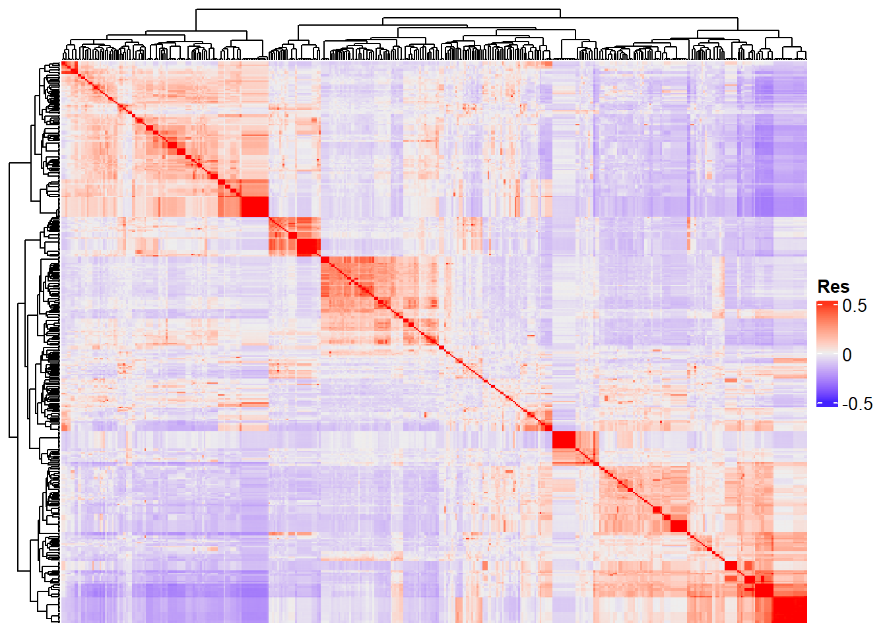

Last updated: 2025-01-17
Checks: 6 1
Knit directory:
Genomic-Selection-for-Drought-Tolerance-Using-Genome-Wide-SNPs-in-Casava/
This reproducible R Markdown analysis was created with workflowr (version 1.7.1). The Checks tab describes the reproducibility checks that were applied when the results were created. The Past versions tab lists the development history.
The R Markdown file has unstaged changes. To know which version of
the R Markdown file created these results, you’ll want to first commit
it to the Git repo. If you’re still working on the analysis, you can
ignore this warning. When you’re finished, you can run
wflow_publish to commit the R Markdown file and build the
HTML.
Great job! The global environment was empty. Objects defined in the global environment can affect the analysis in your R Markdown file in unknown ways. For reproduciblity it’s best to always run the code in an empty environment.
The command set.seed(20221020) was run prior to running
the code in the R Markdown file. Setting a seed ensures that any results
that rely on randomness, e.g. subsampling or permutations, are
reproducible.
Great job! Recording the operating system, R version, and package versions is critical for reproducibility.
Nice! There were no cached chunks for this analysis, so you can be confident that you successfully produced the results during this run.
Great job! Using relative paths to the files within your workflowr project makes it easier to run your code on other machines.
Great! You are using Git for version control. Tracking code development and connecting the code version to the results is critical for reproducibility.
The results in this page were generated with repository version 75e71b8. See the Past versions tab to see a history of the changes made to the R Markdown and HTML files.
Note that you need to be careful to ensure that all relevant files for
the analysis have been committed to Git prior to generating the results
(you can use wflow_publish or
wflow_git_commit). workflowr only checks the R Markdown
file, but you know if there are other scripts or data files that it
depends on. Below is the status of the Git repository when the results
were generated:
Ignored files:
Ignored: .Rhistory
Ignored: .Rproj.user/
Ignored: data/allchrAR08.txt
Ignored: output/BLUPS_density_med_row_col.png
Ignored: output/Density_residual_row_col.tiff
Ignored: output/Residuals_vs_fitted_row_col.tiff
Ignored: output/varcomp_row_col.tiff
Untracked files:
Untracked: analysis/GWS_BayesA.Rmd
Untracked: analysis/GWS_BayesB.Rmd
Untracked: analysis/GWS_G-BLUP.Rmd
Untracked: analysis/GWS_RF.Rmd
Untracked: analysis/GWS_RKHS.Rmd
Untracked: analysis/GWS_RR-BLUP.Rmd
Untracked: analysis/clone_selection.Rmd
Untracked: analysis/figure/GWS.Rmd/
Untracked: data/Artigo/
Untracked: data/geno.rds
Untracked: data/pheno.rds
Unstaged changes:
Modified: analysis/GWS.Rmd
Modified: analysis/mixed_models.Rmd
Modified: data/SNPs.rds
Note that any generated files, e.g. HTML, png, CSS, etc., are not included in this status report because it is ok for generated content to have uncommitted changes.
These are the previous versions of the repository in which changes were
made to the R Markdown (analysis/GWS.Rmd) and HTML
(docs/GWS.html) files. If you’ve configured a remote Git
repository (see ?wflow_git_remote), click on the hyperlinks
in the table below to view the files as they were in that past version.
| File | Version | Author | Date | Message |
|---|---|---|---|---|
| Rmd | 9cd1493 | WevertonGomesCosta | 2025-01-17 | Update GWS.Rmd |
| Rmd | 286b492 | Weverton Gomes | 2023-10-27 | Update Scripts and README |
| html | 286b492 | Weverton Gomes | 2023-10-27 | Update Scripts and README |
| Rmd | 90dc112 | WevertonGomesCosta | 2022-11-17 | Update |
| Rmd | 6cc4d23 | WevertonGomesCosta | 2022-11-17 | Update |
| html | 6cc4d23 | WevertonGomesCosta | 2022-11-17 | Update |
| Rmd | 1936c51 | WevertonGomesCosta | 2022-11-11 | Update |
| html | 1936c51 | WevertonGomesCosta | 2022-11-11 | Update |
| Rmd | 62bf2ac | WevertonGomesCosta | 2022-11-11 | Update |
| html | 62bf2ac | WevertonGomesCosta | 2022-11-11 | Update |
| Rmd | 5988c27 | WevertonGomesCosta | 2022-11-11 | Update |
| Rmd | bf7b1d3 | WevertonGomesCosta | 2022-11-11 | Update |
| html | bf7b1d3 | WevertonGomesCosta | 2022-11-11 | Update |
To perform the analyses, we will need the following packages:
library(readxl)
library(tidyverse)
library(kableExtra)
#devtools::install_github("wolfemd/genomicMateSelectR", ref = 'master')
library(genomicMateSelectR)
library(AGHmatrix)
library(ComplexHeatmap)The data set is based in genotypes evalueted in five years (2016 to 2020), each year was considered as environment.
First let’s get the marker IDs for each clone.
names <-
read_excel("data/Phenotyping2.xlsx", sheet = "GBS") |>
rename(Clone = `Names trials Petrolina`, ID_Clone = `Nome GBS`) |>
mutate(ID_Clone = str_replace_all(ID_Clone, ":", ".")) |>
select(Clone, ID_Clone)
names |>
head() |>
kbl(escape = F, align = 'c') |>
kable_classic("hover", full_width = F, position = "center", fixed_thead = T)| Clone | ID_Clone |
|---|---|
| 4271 | 4271.250494233 |
| 9624-09 | 962409.250370255 |
| Aipim Abacate | ERETA.250437577 |
| Alagoana | Alagoana363.250437472 |
| BGM-0004 | CNPMF4.250370278 |
| BGM-0019 | CNPMF19.250370327 |
Now let’s group the marker IDs with the clone names.
pheno <- read.csv("output/BLUPS_row_col_random.csv") |>
mutate(Clone = str_split_i(Clone, "[.]", -1)) |>
inner_join(names) |> # Join Phenotypic with Genotypic datas
mutate(Clone = factor(Clone), ID_Clone = factor(ID_Clone))Joining with `by = join_by(Clone)`pheno |>
head() |>
kbl(escape = F, align = 'c') |>
kable_classic("hover", full_width = F, position = "center", fixed_thead = T)| trait | Clone | BLUP | BLUPS_mean | drgBLUP_mean | ID_Clone |
|---|---|---|---|---|---|
| N_Roots | 4271 | -0.8918756 | 3.401067 | 2.715979 | 4271.250494233 |
| N_Roots | 9624-09 | 1.8104038 | 6.103346 | 9.106536 | 962409.250370255 |
| N_Roots | Aipim Abacate | 1.5033015 | 5.796244 | 6.952723 | ERETA.250437577 |
| N_Roots | Alagoana | -0.3341086 | 3.958834 | 3.703014 | Alagoana363.250437472 |
| N_Roots | BGM-0004 | -0.6240384 | 3.668904 | 3.190100 | CNPMF4.250370278 |
| N_Roots | BGM-0019 | -1.6545523 | 2.638390 | 1.201559 | CNPMF19.250370327 |
Now let’s load the genotypic data from the GBS markers and correct the base pair values. Furthermore, we will also divide the alleles column into two columns, for the reference allele and the recessive allele. And we will select the columns with the names of the markers, reference alleles and the columns with the clone IDs according to the BLUPs data.
geno <- read.table("data/allchrAR08.txt", header = T) |>
mutate(across(12:3365, ~{
case_when(
. == "A" ~ "AA",
. == "R" ~ "AG",
. == "W" ~ "AT",
. == "M" ~ "AC",
. == "C" ~ "CC",
. == "S" ~ "CG",
. == "Y" ~ "CT",
. == "G" ~ "GG",
. == "K" ~ "GT",
. == "T" ~ "TT")
})) |>
separate(alleles, c("reference", "recess")) |>
select(rs, reference, recess, any_of(pheno$ID_Clone))
geno[1:5, 1:20] |>
kbl(escape = F, align = 'c') |>
kable_classic("hover", full_width = F, position = "center", fixed_thead = T)| rs | reference | recess | ERETA.250437577 | Alagoana363.250437472 | CNPMF4.250370278 | CNPMF19.250370327 | CNPMF30.250370293 | CNPMF32.250370305 | CNPMF36.250370328 | CNPMF46.250370283 | CNPMF48.250370295 | CNPMF56.250370248 | CNPMF65.250370285 | CNPMF66.250370296 | CNPMF74.250370321 | CNPMF80.250370250 | CNPMF84.250370263 | CNPMF89.250370287 | CNPMF91.250370299 |
|---|---|---|---|---|---|---|---|---|---|---|---|---|---|---|---|---|---|---|---|
| S1_84637 | A | G | AA | AA | AA | AG | AA | AA | AA | AA | AA | AA | AA | AA | AA | AA | AA | AA | AA |
| S1_84843 | C | A | CC | CC | CC | CC | AC | CC | CC | CC | CC | CC | CC | CC | CC | CC | CC | CC | CC |
| S1_126260 | A | C | AA | AA | AA | AA | AA | AA | AA | AA | AA | AA | AA | AA | AA | AA | AA | AA | AA |
| S1_126261 | A | G | AA | AA | AA | AA | AA | AA | AA | AA | AA | AA | AA | AA | AA | AA | AA | AA | AA |
| S1_126264 | T | G | TT | TT | TT | TT | TT | TT | TT | TT | TT | TT | TT | TT | TT | TT | TT | TT | TT |
Now we need to do the base pair conversion for allelic dosage according to the reference allele. I will also add the rs column as the column name. Then I will exclude the reference and recess allele columns. To convert into the format to perform GWS analyses, we have to transpose the marker matrix.
geno <- geno |>
mutate(across(4:ncol(geno), ~{
case_when(
. == paste(reference, reference, sep = "") ~ 2,
. == paste(recess, recess, sep = "") ~ 0,
TRUE ~ 1
)
})) |>
select(-c(reference, recess)) |>
column_to_rownames(var ="rs") |>
t()
geno[1:5, 1:5] |>
kbl(escape = F, align = 'c') |>
kable_classic("hover", full_width = F, position = "center", fixed_thead = T)| S1_84637 | S1_84843 | S1_126260 | S1_126261 | S1_126264 | |
|---|---|---|---|---|---|
| ERETA.250437577 | 2 | 2 | 2 | 2 | 2 |
| Alagoana363.250437472 | 2 | 2 | 2 | 2 | 2 |
| CNPMF4.250370278 | 2 | 2 | 2 | 2 | 2 |
| CNPMF19.250370327 | 1 | 2 | 2 | 2 | 2 |
| CNPMF30.250370293 | 2 | 1 | 2 | 2 | 2 |
Let’s check how many clones present data genotyped with the markers.
geno |>
dim() |>
t() |>
kbl(escape = F, align = 'c',
col.names = c("Number of Clones", "Number of markers")) |>
kable_classic("hover", full_width = F, position = "center", fixed_thead = T)| Number of Clones | Number of markers |
|---|---|
| 415 | 27045 |
By filtering common genotypes, we have 415 genotypes and 27045 brands.
Now let’s filter the SNPS using MAF of 0.01 and check how many markers will remain.
geno <- maf_filter(geno, thresh = 0.01)
geno |>
dim() |>
t() |>
kbl(escape = F, align = 'c',
col.names = c("Number of Clones", "Number of markers")) |>
kable_classic("hover", full_width = F, position = "center", fixed_thead = T)| Number of Clones | Number of markers |
|---|---|
| 415 | 22779 |
With the MAF filter at 1%, 22779 markers remained. I’m going to save the matrix now so we can load it if necessary.
For this purpose, we will use only individuals with BLUps and SNPs available.
pheno <- pheno |>
select(ID_Clone, trait, BLUP) %>%
pivot_wider(names_from = trait, values_from = BLUP, id_cols = 1) %>%
filter(ID_Clone %in% rownames(geno)) |>
droplevels()
traits <- colnames(pheno)[-1]
pheno <- pheno[order(pheno$ID_Clone, decreasing = F),]
geno <- geno[order(row.names(geno)),]
all(rownames(geno) == pheno$ID_Clone)[1] TRUEAgain, we will use the AGHmatrix package [@amadeu_aghmatrix_2016] to build the G matrix:
Initial data:
Number of Individuals: 415
Number of Markers: 22779
Missing data check:
Total SNPs: 22779
0 SNPs dropped due to missing data threshold of 0.5
Total of: 22779 SNPs
MAF check:
No SNPs with MAF below 0
Heterozigosity data check:
No SNPs with heterozygosity, missing threshold of = 0
Summary check:
Initial: 22779 SNPs
Final: 22779 SNPs ( 0 SNPs removed)
Completed! Time = 9.88 seconds Now we have the whole G matrix (414 x 414), which we can represent using a heatmap:
Heatmap of the genomic kinship matrix between clones
Heatmap(
G_matrix,
show_row_names = F,
show_column_names = F,
heatmap_legend_param = list(title = "Res")
)
“Res” in the heatmap legend title is for “Resemblance”.
Let’s now move on to processing each model. Since this can be time-consuming, I’ve separated it into parallel processing and each model into each script:
R version 4.3.3 (2024-02-29 ucrt)
Platform: x86_64-w64-mingw32/x64 (64-bit)
Running under: Windows 10 x64 (build 19045)
Matrix products: default
locale:
[1] LC_COLLATE=Portuguese_Brazil.utf8 LC_CTYPE=Portuguese_Brazil.utf8
[3] LC_MONETARY=Portuguese_Brazil.utf8 LC_NUMERIC=C
[5] LC_TIME=Portuguese_Brazil.utf8
time zone: America/Sao_Paulo
tzcode source: internal
attached base packages:
[1] grid stats graphics grDevices utils datasets methods
[8] base
other attached packages:
[1] ComplexHeatmap_2.16.0 AGHmatrix_2.1.4 genomicMateSelectR_0.2.0
[4] kableExtra_1.4.0 lubridate_1.9.4 forcats_1.0.0
[7] stringr_1.5.1 dplyr_1.1.4 purrr_1.0.2
[10] readr_2.1.5 tidyr_1.3.1 tibble_3.2.1
[13] ggplot2_3.5.1 tidyverse_2.0.0 readxl_1.4.3
loaded via a namespace (and not attached):
[1] shape_1.4.6.1 circlize_0.4.16 gtable_0.3.6
[4] rjson_0.2.23 xfun_0.50 bslib_0.8.0
[7] GlobalOptions_0.1.2 lattice_0.22-6 tzdb_0.4.0
[10] vctrs_0.6.5 tools_4.3.3 generics_0.1.3
[13] stats4_4.3.3 parallel_4.3.3 cluster_2.1.8
[16] pkgconfig_2.0.3 Matrix_1.6-1 RColorBrewer_1.1-3
[19] S4Vectors_0.38.1 lifecycle_1.0.4 compiler_4.3.3
[22] git2r_0.35.0 munsell_0.5.1 codetools_0.2-20
[25] clue_0.3-66 httpuv_1.6.15 htmltools_0.5.8.1
[28] sass_0.4.9 yaml_2.3.10 crayon_1.5.3
[31] later_1.4.1 pillar_1.10.1 jquerylib_0.1.4
[34] whisker_0.4.1 cachem_1.1.0 iterators_1.0.14
[37] foreach_1.5.2 tidyselect_1.2.1 digest_0.6.37
[40] stringi_1.8.4 rprojroot_2.0.4 fastmap_1.2.0
[43] colorspace_2.1-1 cli_3.6.3 magrittr_2.0.3
[46] withr_3.0.2 scales_1.3.0 promises_1.3.2
[49] timechange_0.3.0 rmarkdown_2.29 matrixStats_1.5.0
[52] workflowr_1.7.1 cellranger_1.1.0 GetoptLong_1.0.5
[55] png_0.1-8 zoo_1.8-12 hms_1.1.3
[58] evaluate_1.0.3 knitr_1.49 IRanges_2.34.1
[61] doParallel_1.0.17 viridisLite_0.4.2 rlang_1.1.4
[64] Rcpp_1.0.14 glue_1.8.0 xml2_1.3.6
[67] BiocGenerics_0.46.0 svglite_2.1.3 rstudioapi_0.17.1
[70] jsonlite_1.8.9 R6_2.5.1 systemfonts_1.1.0
[73] fs_1.6.5 Weverton Gomes da Costa, Pós-Doutorando, Embrapa Mandioca e Fruticultura, wevertonufv@gmail.com↩︎